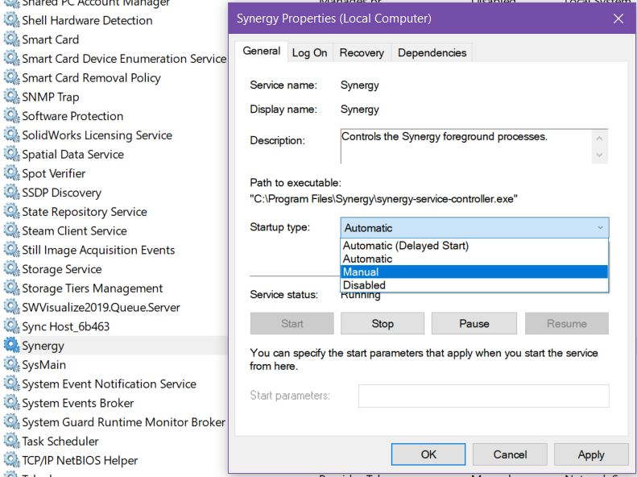

Windows Mouse Lagging
Table of Contents
Background
For a while lately, I’ve been dealing with a very frustrating issue on my Windows 10 desktop and laptop. Whenever I would turn on my computer, the mouse cursor would lag horribly for around 20 seconds.
Weirdly, the mouse would almost
always return to normal after pressing Ctrl+Alt+Del or Ctrl+Shift+Esc (which opens
Task Manager). While I’m not familiar with how Windows works, I know that Ctrl+Alt+Del
produces a kernel interrupt which may be why it fixes it. I don’t know
what’s special about opening Task Manager which would fix it. Anywho, this is was
getting annoying and I couldn’t figure out why.
Culprit
The culprit ended up being Synergy 2. How did I figure this out? Nothing more than an educated guess really. Why is it causing this? Not a clue.
To disable Synergy until you need it, you need to go into Services. Simply killing all the running executables isn’t enough, as Synergy registers a service which will automatically restart them. Find “Synergy” in the list, right-click and go to Properties -> Startup type -> Manual.

You’ll just need to manually start and stop the Synergy service now whenever you want to use it.